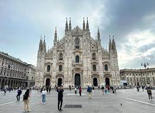
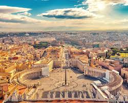
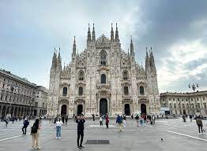
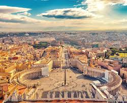

𝑆𝑜𝑚𝑒 𝑖𝑚𝑝𝑜𝑟𝑡𝑎𝑛𝑡 𝑣𝑎𝑙𝑢𝑒𝑠 𝑎𝑛𝑑 𝑎𝑠𝑝𝑒𝑐𝑡𝑠 𝑜𝑓 𝐼𝑡𝑎𝑙𝑖𝑎𝑛 𝑙𝑖𝑓𝑒𝑠𝑡𝑦𝑙𝑒 𝑎𝑟𝑒 𝑓𝑎𝑚𝑖𝑙𝑦 𝑎𝑛𝑑 𝑠𝑝𝑒𝑛𝑑𝑖𝑛𝑔 𝑡𝑖𝑚𝑒 𝑤𝑖𝑡ℎ 𝑡ℎ𝑒𝑚, 𝑟𝑒𝑙𝑖𝑔𝑖𝑜𝑛 𝑎𝑛𝑑 𝑚𝑎𝑖𝑛𝑡𝑎𝑖𝑛𝑖𝑛𝑔 𝐶𝑎𝑡ℎ𝑜𝑙𝑖𝑐 𝑡𝑟𝑎𝑑𝑖𝑡𝑖𝑜𝑛𝑠, 𝑎𝑛𝑑 𝑡ℎ𝑒 𝑝𝑙𝑒𝑎𝑠𝑢𝑟𝑒 𝑜𝑓 𝑒𝑎𝑡𝑖𝑛𝑔 𝑔𝑜𝑜𝑑 𝑚𝑒𝑎𝑙𝑠 𝑝𝑟𝑒𝑝𝑎𝑟𝑒𝑑 𝑤𝑖𝑡ℎ 𝑙𝑜𝑣𝑒 𝑎𝑛𝑑 𝑑𝑒𝑑𝑖𝑐𝑎𝑡𝑖𝑜𝑛. 𝐺𝑒𝑠𝑡𝑢𝑟𝑒𝑠 𝑎𝑛𝑑 𝑏𝑜𝑑𝑦 𝑙𝑎𝑛𝑔𝑢𝑎𝑔𝑒 𝑎𝑟𝑒 𝑖𝑚𝑝𝑜𝑟𝑡𝑎𝑛𝑡 𝑖𝑛 𝑡ℎ𝑒 𝐼𝑡𝑎𝑙𝑖𝑎𝑛 𝑙𝑎𝑛𝑔𝑢𝑎𝑔𝑒 𝑡𝑜 𝑒𝑚𝑝ℎ𝑎𝑠𝑖𝑧𝑒 𝑐𝑒𝑟𝑡𝑎𝑖𝑛 𝑖𝑑𝑒𝑎𝑠.
 


